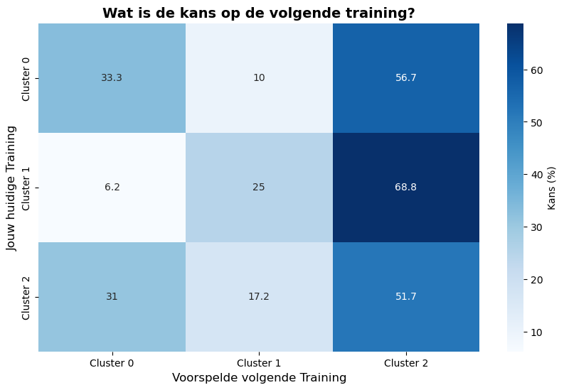
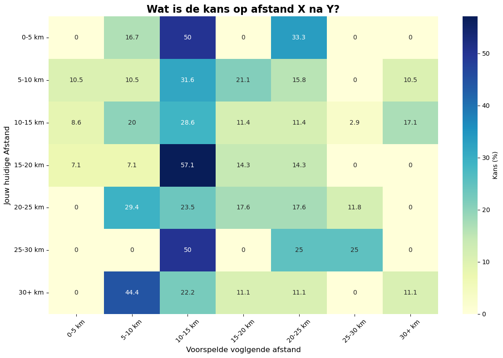

Het leek mij erg leuk om als eerste data-project iets te doen met mijn eigen hardloop data. Misschien nog geen deep dive machine learning of AI-modellen, maar wel iets wat uit mijn eigen dag komt. Ik weet dat Garmin en Strava mij dezelfde grafieken kunnen laten zien maar toch zijn deze net wat anders. Na wat saaie grafieken heb ik wat geprobeerd om te maken a.d.v. markov chains.
Code
import pandas as pdactivities = client.get_activities(0, 582)df_raw = pd.DataFrame(activities)relevante_kolommen = ['startTimeLocal', 'distance', 'duration', 'averageHR', 'maxHR']bestaande_kolommen = [col for col in relevante_kolommen if col in df_raw.columns]df_raw[bestaande_kolommen].head()
Een heatmap van al mijn runs, zoals je kunt zien ren ik vaak in de duinen rondom IJmuiden en Haarlem.
Code
import foliumimport pandas as pdfrom IPython.display import displayrun_data = df_recent.copy()totaal_runs =len(run_data)if totaal_runs ==0:print("df_recent is leeg")else: heatmap = folium.Map(location=[52.46, 4.62], zoom_start=11, tiles='CartoDB dark_matter') succesvol =0 overgeslagen =0for index, run in run_data.iterrows(): activity_id = run['activityId']try: details = client.get_activity_details(activity_id)if details and details.get('geoPolylineDTO') and details['geoPolylineDTO'].get('polyline'): gps_punten = details['geoPolylineDTO']['polyline'] route = [ [punt['lat'], punt['lon']] for punt in gps_punten if punt.get('lat') isnotNoneand punt.get('lon') isnotNone ]if route: folium.PolyLine( locations=route, color='#fc4c02', weight=2, opacity=0.3 ).add_to(heatmap) succesvol +=1else: overgeslagen +=1exceptExceptionas e:print(f"Fout {activity_id}: {e}") overgeslagen +=1 display(heatmap)
Mijn trainings-data gerund op het K-Means algoritme, dit algoritme zoekt structuur in mijn data. We zien 3 profielen. - Cluster 0: Langzame herstel loopjes van ca 10km met een tempo van 5:40/km. - Cluster 2: Snellere loopjes van ca 11km met een tempo van 4:40/km. - Cluster 1: Langzame duurloopjes van ca 24km met een gemiddeld tempo van 5:50/km.
Nadat je al 3 jaar lang rent kan je van jezelf best voorspellen wat de volgende training wordt, maar kan een algoritme dat ook? Met de hulp van markov chains zie je hier een matrix waarin de kans op de volgende training wordt benoemd.
Code
import pandas as pdimport seaborn as snsimport matplotlib.pyplot as pltdf_ml = df_ml.sort_values('datum')df_ml['Volgende_Training'] = df_ml['Cluster'].shift(-1)df_markov = df_ml.dropna(subset=['Volgende_Training'])transitie_matrix = pd.crosstab( df_markov['Cluster'], df_markov['Volgende_Training'], normalize='index')transitie_matrix = (transitie_matrix *100).round(1)plt.figure(figsize=(10, 6))sns.heatmap(transitie_matrix, annot=True, fmt='g', cmap='Blues', cbar_kws={'label': 'Kans (%)'})plt.title('Wat is de kans op de volgende training?', fontsize=14, fontweight='bold')plt.xlabel('Voorspelde volgende Training', fontsize=12)plt.ylabel('Jouw huidige Training', fontsize=12)plt.show()laatste_run = df_ml.iloc[-1]['Cluster']voorspelling = transitie_matrix.loc[laatste_run].idxmax()kans = transitie_matrix.loc[laatste_run].max()print(f"Je laatste run was een: {laatste_run}.")print(f"Op basis van jouw eigen data is de kans het grootst ({kans}%) dat je volgende run een {voorspelling} wordt")

Je laatste run was een: Cluster 1.
Op basis van jouw eigen data is de kans het grootst (68.8%) dat je volgende run een Cluster 2 wordt
Om het wat makkelijker te maken heb ik afstand genomen van de clusters en gaan we nu kijken naar daadwerkelijke afstanden. Deze matrix is wat uitgebreider. Je ziet dat als ik een loop van 25-30km heb afgerond dat er een 25% kans is dat de volgende training ook net zo lang wordt.
Code
import pandas as pdimport seaborn as snsimport matplotlib.pyplot as pltimport numpy as npdf_afstand = df_combo.copy()df_afstand = df_afstand.sort_values('datum')bins = [0, 5, 10, 15, 20, 25, 30, np.inf]labels = ['0-5 km', '5-10 km', '10-15 km', '15-20 km', '20-25 km', '25-30 km', '30+ km']df_afstand['Afstand_Categorie'] = pd.cut(df_afstand['afstand_km'], bins=bins, labels=labels)df_afstand['Volgende_Afstand'] = df_afstand['Afstand_Categorie'].shift(-1)df_afstand = df_afstand.dropna(subset=['Volgende_Afstand'])transitie_matrix_km = pd.crosstab( df_afstand['Afstand_Categorie'], df_afstand['Volgende_Afstand'], normalize='index')transitie_matrix_km = (transitie_matrix_km *100).round(1)plt.figure(figsize=(12, 8))sns.heatmap(transitie_matrix_km, annot=True, fmt='g', cmap='YlGnBu', cbar_kws={'label': 'Kans (%)'})plt.title('Wat is de kans op afstand X na Y?', fontsize=16, fontweight='bold')plt.xlabel('Voorspelde voglgende afstand', fontsize=12)plt.ylabel('Jouw huidige Afstand', fontsize=12)plt.xticks(rotation=45)plt.yticks(rotation=0)plt.tight_layout()plt.show()laatste_afstand_km = df_afstand.iloc[-1]['afstand_km']laatste_bakje = df_afstand.iloc[-1]['Afstand_Categorie']voorspeld_bakje = transitie_matrix_km.loc[laatste_bakje].idxmax()kans = transitie_matrix_km.loc[laatste_bakje].max()print(f"Je laatste run was exact {laatste_afstand_km:.1f} km (Categorie: '{laatste_bakje}').")print(f"Historisch gezien is de kans het grootst ({kans}%) dat je volgende run tussen de '{voorspeld_bakje}' wordt.")

Je laatste run was exact 10.7 km (Categorie: '10-15 km').
Historisch gezien is de kans het grootst (28.6%) dat je volgende run tussen de '10-15 km' wordt.